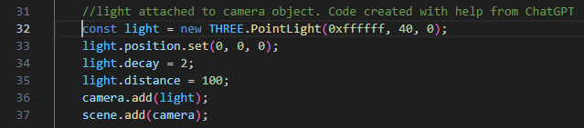
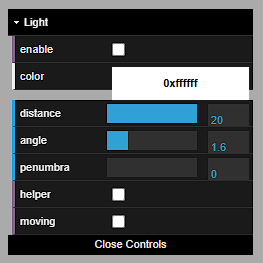

For my website, I expanded upon the lab-made cola marketing webpages, using different brands, more complex models, and expanded CSS formatting.
I created three 3D models for my website for the brands Pepsi, Sprite, and Fanta. I created a glass, can, and bottle for the three brands, each with unique and appropriate animations.
All three models were created using Cinema 4D and Blender, using a combination of modelling methods in C4D, including editable generic objects and the spline pen tool. More complex geometry, such as the repeating pattern on the outside of the Pepsi glass (see image below), required the use of tools such as cloner objects which, when parented to another object, can duplicate it in varying patterns as many times as the artist would like. After the models’ geometry was completed, I imported the models into Blender for texturing and animation finalisations. This is because Cinema 4D materials are poorly supported by THREE.js.

Model lighting and virtual cameras were handled in THREE.js. Each model’s webpage’s HTML linked to a unique JS file which contained code initialising a THREE.js scene, camera object, and lights. Due to the chromatic nature of some of my models’ materials (created in Blender as custom materials), ambient light sources would not work to light the models. To combat this, with guidance from online resources and ChatGPT, I incorporated JS code that parented the directional light to the camera, resulting in the models always being uniformly lit no matter the viewing angle of the virtual camera. Extra, user customisable lighting was added to the JS code (see images below).
 When embedding glass and bottle 3D models into their respective webpages I encountered a highly complex problem with transparent textures not loading. These textures did load correctly in GLTF Viewer and THREE.js editor. Videos embedded at the bottom of each 3D model’s webpage shows renders of the models with correct textures applied.
Adhering to philosophies of user-centred design, my website uses two CSS documents to style the webpages.
Using the lab-designed webpages as a foundation, I styled major text elements, giving them brand-themed coloured outlines, and added styled images and layout designs to webpages (see image below for example).
CSS styling aimed to not only increase the visual appeal of the website, but also aimed to create an accessible, functional, and responsive website. I believe the website was successful in achieving this fluid user interface. The website is functional and intuitive, which was reassured to me through feedback I received from user testing (I asked for feedback from family and friends, having them play with the website).
Using HTML and JS code, stylised text, videos, images, audio, and my 3D models were added to the webpages, with CSS used to style these elements.
JS code was used to add each 3D model to their respective webpages via their file path within my GitHub repository.
Images and text were added in the webpages’ HTML and styled using my two CSS documents, outlining the colours and boarders etc. of text and images.
Model animations were rendered from Blender and uploaded to YouTube. The unlisted YouTube videos were embedded to the webpages in their HTML.
Audio was added to each 3D model and model webpage using Adobe Audition and royalty free audio from Pixabay (https://pixabay.com/sound-effects/). Audio was trimmed to fit the models’ animations, and event listeners were added to each webpage’s JS code to trigger audio when the animation button was clicked.
I wanted to explore using simulations and so my glass and bottle models use physically based simulations for their animations. The glass model is split into several hundred fractures by parenting a Voronoi fracture object to it. Then, using rigid body simulation tags and an invisible 2D ground plane, the fractured object breaks apart under the weight of gravity and splays out across the ground. Similarly, the bottle model uses rigid body tags and an invisible cube acting as a trigger, simulating the bottle cap being flicked off the top of the bottle. Opposingly, the can object uses traditional keyframe animation techniques to show the can ring pull piercing open the top of the can.
To convert the simulations into animations (a necessary step for the animations to play in THREE.js), I used Blender. In C4D the simulations were ‘baked as alembic,’ and the alembic files (.abc) were then imported into Blender, which includes both the model’s geometry and simulation data. With all points selected in object mode, Object > Animation > Bake Action bakes the simulation data into a keyframed animation. When exported from Blender as a .glb file, with animations included, the models’ animations are also exported in a THREE.js compatible format (see image below).
JavaScript funds interactivity across the 3D models’ webpages. THREE.js scenes were hosted through JS code allowing the 3D models to be viewed in 3D space, and the virtual camera can be rotated, moved, and zoomed in and out. Through JS code and button elements, users can interact with the 3D models in other, more complex ways. One button switches the view model to the object's wireframe, showcasing the polygons on the model; the rotate button allows the user to incrementally rotate the model around the y axis, viewing it from 360 degrees of angles.
Examples of interactivity in other webpages (outside of the webpages produced in the labs) includes image buttons in the webpages’ footer, with the YouTube icon linking to my YouTube portfolio channel which was used to host animation videos embedded in the models’ webpages. Also, lighting UI was added in JS code, allowing the user to customise the lighting on the model, including the colour and movement of the directional light source.
I have taken many steps to go beyond the work and webpages covered in the labs. I expanded the CSS produced in the labs in stylised text and image elements throughout the site, furthering the brand identities of Pepsi, Sprite, and Fanta; also, using @media tags within the style.css document, I created a clear visual distinction between the colour and layout of the website when viewed in a vertical format to when viewed on a larger screen (see images below for comparison).
Other, more complex interactions occur throughout the website, showing a deeper understanding. For example, parenting the directional light to the virtual camera in THREE.js allows the 3D models to be viewed with consistent lighting from all angles.
I have added an about page, highlighting the work done to produce the website. I have synchronised my work across multiple devices using a GitHub repository and GitHub Desktop to host my work. I have archived my GitHub repository and linked it in my Canvas submission; I have also uploaded a zipped folder containing my work (as redundancy).
This website is a product of my own work. Where highlighted in code (via comments), external reasorces were used to aid development:
Pixabay. Avaliable at: https://pixabay.com/sound-effects/ (Accessed: 3 August 2025).
ChatGPT. Avaliable at: https://chatgpt.com/ (Accessed June, July, August 2025).